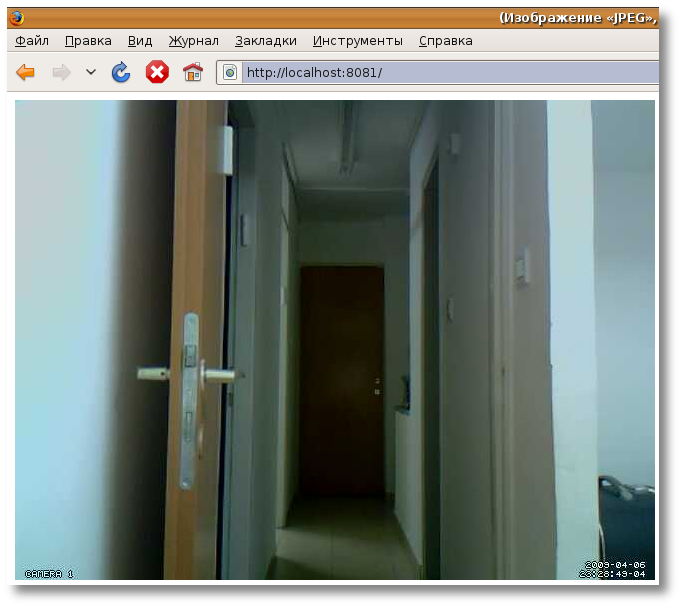

Видеонаблюдение в Linux с помощью системы обнаружения движения Motion
Сама по себе идея видео-наблюдения думаю интересует многих. Всегда интересно знать, что происходит в ваше отсутствие на рабочем месте, в офисе, дома в саду. Если подойти к вопросу серьезно, то окажется, что путей решения очень много. Причем, что радует как в Windows так и в Linux. Например я гуляя по магазинам у себя в городе видел как минимум десяток совершенно разных систем реализованных вод Windows, обладающих красивым («удобным»=ненужным) графическим интерфейсом и стоит все это кучу денег. Другой вопрос, это реализация полноценной системы видео-наблюдения под Linux. Выбор как это сделать, очень даже ничего. Вот из тех, что попались мне и понравились.
AVReg — Представляет собой программное обеспечение (software) для создания аудио/видео регистраторов на на базе персональных компьютеров и видеосерверов под управлением Linux. Распространяется в виде набора пакетов для некоторых основных дистрибутивов Linux. К сожалению программа имеет не совсем свободную лицензию (license) однако даже вариант для некоммерческого использования с некоторыми урезанными функциями вполне хватит для домашнего использования. Плюс же этой системы в том, что она активно развивается и имеет огромное количество надстроек, графический интерфейс, проект русский так что вся документация на русском + подробные инструкции по настройке и установке.
ZoneMinder — так же мультиплатформенная проффесиональная система, тоже развивается, правда не так активно, все сопровождение и документация на английском, присутствует в репозитариях, и тянет за собой MySQL базу и http-сервер Apache.
NetAvis Observer — серьезное программное обеспечение, сопровождается на английском, активно развивается и рассчитано на серьезные проекты.
Motion — Программа Motion способна контролировать сигнал, полученный с одной или нескольких видеокамер, и обнаруживать наличие изменений на картинке. На выходе получаем фотки в форматах jpeg, ppm или mpeg видеопоток, который может транслироваться в сеть или записываться в файл. Проект целиком и полностью свободный, сама программа существует только в виде демона что обеспечивает низкое ресурсо-потребление, имеет встроенный мини http-server (это позволяет смотреть видео в реальном времени в браузере на локальном компьютере или же другом компьютере в сети, интернете) и может работать с СУБД MsSQL, настраивается через конфиг-файлы. На этом варианте я и остановился.
Оборудование необходимое для видео-слежения:
Устанавливаем motion
В Ubuntu 8.10\9.04 программа и все сопутствующие модули есть в репозитариях. Так что установка программы производиться в одну строчку в консоли и в 1 минуту ожидания.
sudo aptitude install motion
После того как установка произведена, вы можете приступить к настройке программы. В моем случае это захват видео с устройства при фиксации движения в кадре. Т.е. запись в файл начинается только в том случае, если motion фиксирует движение, очень удобно, так как это не съест все ваше свободное пространство на винте, да не будет надобности просматривать пустые фильмы.
Конфиг файл находиться в /etc/motion/motion.conf
Открываем его текстовым редактором gedit.
sudo gedit /etc/motion/motion.conf
Конфиг очень подробно прокомментирован на детском английском, по этому уделив ему пол часа времени, вы точно будете знать как именно нужно делать и какие настройки менять, что-бы получить желаемый результат.
Я приведу основные важные моменты в моем случае (смотри выше)
——————————————————————————————————————————————————————————
# Start in daemon (background) mode and release terminal (default: off)
#Стартовать как демон, этот параметр можно поставить в on, по умолчанию он в off
daemon on
# Videodevice to be used for capturing (default /dev/video0)
# for FreeBSD default is /dev/bktr0
#В Линукс ваше видео устройство для захвата должно быть по умолчанию /dev/video0 если вы имеете несколько то соответственно /dev/video1 /dev/video2 и т.д.
videodevice /dev/video0
# The video input to be used (default: 8 )
# Should normally be set to 0 or 1 for video/TV cards, and 8 for USB cameras
#Используемый вход для видео этот параметр не трогать
input 8
# Image width (pixels). Valid range: Camera dependent, default: 352
#Разрешение вашего видео тут как вам нравиться 320х240, 640х480 …
width 640
# Image height (pixels). Valid range: Camera dependent, default: 288
height 480
# Maximum number of frames to be captured per second.
# Valid range: 2-100. Default: 100 (almost no limit).
# Устанавливаем количество захватываемых кадров в секунду;
framerate 30 (30 в самый раз)
# Gap is the seconds of no motion detection that triggers the end of an event
# An event is defined as a series of motion images taken within a short timeframe.
# Recommended value is 60 seconds (Default). The value 0 is allowed and disables
# events causing all Motion to be written to one single mpeg file and no pre_capture.
#gap отвечает за длину ролика который будет храниться в
gap 60
# Maximum length in seconds of an mpeg movie
# When value is exceeded a new mpeg file is created. (Default: 0 = infinite)
#ОЧЕНЬ ВАЖНЫЙ ПАРАМЕТР!
Чтобы захваченный файл не был большим, его продолжительность можно ограничить параметром max_mpeg_time, указав в качестве значения время в секундах. По умолчанию «0» это значит что motion будет писать все видео в независимости есть движение или нет. Это не очень круто!
max_mpeg_time 120
# Output ‘normal’ pictures when motion is detected (default: on)
# Valid values: on, off, first, best, center
# When set to ‘first’, only the first picture of an event is saved.
# Picture with most motion of an event is saved when set to ‘best’.
# Picture with motion nearest center of picture is saved when set to ‘center’.
# Can be used as preview shot for the corresponding movie.
#Это параметр указывает какой скриншот с движением сохранить, по умолчанию стоит на on это не круто так как он будет сейвить все подряд, по истечении 1 часа у вас их будет 10000~
по этому ставим или best (лучший), или first (первый)
output_normal best
# Output pictures with only the pixels moving object (ghost images) (default: off)
#ничего не трогаем!
output_motion off
# Use ffmpeg to encode mpeg movies in realtime (default: off)
#ВАЖНЫЙ ПАРАМЕТР! Так как именно он указывает motion что нада сохранять видео
на нужно именно видео, по дефолту стоит off переключаем на on
ffmpeg_cap_new on
# Codec to used by ffmpeg for the video compression.
# Timelapse mpegs are always made in mpeg1 format independent from this option.
# Supported formats are: mpeg1 (ffmpeg-0.4.8 only), mpeg4 (default), and msmpeg4.
# mpeg1 — gives you files with extension .mpg
# mpeg4 or msmpeg4 — gives you files with extension .avi
# msmpeg4 is recommended for use with Windows Media Player because
# it requires no installation of codec on the Windows client.
# swf — gives you a flash film with extension .swf
# flv — gives you a flash video with extension .flv
# ffv1 — FF video codec 1 for Lossless Encoding ( experimental )
# mov — QuickTime ( testing )
#тут большая запарка, так как если ставить кодек mpeg4 или mpeg1 после запуска motion вам радостно сообщит что не может найти кодек в системе, этот вопрос решается по разному, самый простой способ, это установить кодек ffv1 записать пару минут видео и открыть с помощью Totem, который сообщит что не может проиграть файл и автоматически найдет нужный кодек, вам останеться кликнуть ок, дождаться загрузки, и вууаля, видео будет классно проигрыватсья и никаких проблем.
ffmpeg_video_codec ffv1
# Target base directory for pictures and films
# Recommended to use absolute path. (Default: current working directory)
#здесь укажите каталог куда бы вы хотели что-бы сохранялось видео и скрины.
target_dir /home/booch/new
# The mini-http server listens to this port for requests (default: 0 = disabled)
#Это ваш порт на localhost ничего трогать не нада.
webcam_port 8081
# Quality of the jpeg images produced (default: 50)
#По вкусу
webcam_quality 50
# Output frames at 1 fps when no motion is detected and increase to the
# rate given by webcam_maxrate when motion is detected (default: off)
#ставим 20, это оптимальное значение, по дефолту off — это не хорошо
webcam_motion 20
# Maximum framerate for webcam streams (default: 1)
#та же история по дефолту 1, ставим 20 — что есть нормально
webcam_maxrate 20
# Restrict webcam connections to localhost only (default: on)
#НЕ ТРОГАТЬ!
webcam_localhost on
——————————————————————————————————————————————————————————
И так запускаем motion (с правами рута обязательно):
sudo motion -n
Смотрим на вывод, там не должно быть слов error, missing, fatal, signature, cannot find codec, ошибка, cannot save и т.д. Зато должны быть оповещающие вас о том, что запущен мини http-server, и некоторая техническая информация.
Теперь откройте браузер и введите в адресной строке http://localhost:8081/
8081 — это наш порт (смотри конфиг)
localhost — так как видео транслируется на локальную машину, для трансляции видео на машину в сети значение нужно менять (смотри конфиг)
После вы должны увидеть ваше окно с видео в браузере. А в папке которую вы указали в качестве целевой (смотри конфиг) начнет сохраняться ролик + скрин (best) как только вы уйдете с поле зрения камеры и она не будет фиксировать движения, через 120 секунд ролик прекратит писаться.
Теперь ваша камера четко палит за происходящим, если в ее поле зрение попадает движущийся объект то сразу стартует запись, после того как объкт отвалил, запись продолжается 120 секунд, далее ролик не пишется, т.е. Не отъедает место на винте. Короче говоря motion начинает писать только в случае обнаружения движения.
Выглядеть это должно примерно так

Возможности
Для настройки видео наблюдения у себя на системе я использовал камеру ноутбука, если же вы имеете внешнию USB-камеру это еще лучше, купив к ней провод вы можете закрепить ее там, где вам понравиться, в 90% случаях любая современная камера без проблем будет определена Ubuntu 9.04\8.10 если же вы надумали покупать, то лучше в сети ознакомтесь с тем, какие камеры не имееют проблем при работе в Linux.
Возможности motion ограничены только вашей фантазией, при необходимости можно настроить выполнение любой команды или скрипта при выполнении заданного вами условия (например обнаружения движения) Кто читал внимательно, увидел слово скрипт, кто знает, что такое скрипт уже прокрутил в голове 1001 вариант. Вы можете настроить отправку электронной почты, отпарвку сообщения в аську, отправку СМС на мобильник и даже настроить возможность того, что-бы система звонила вам через Asterisk или включала звуковую тревогу.
Дополнительный материал по общим моментам можно найти здесь
Как подготовить Web-камеру можно прочесть подробно и с картинками тут
Мой рабочий конфиг motion.conf:
# Rename this distribution example file to motion.conf
#
# This config file was generated by motion 3.2.11
############################################################
# Daemon
############################################################
# Start in daemon (background) mode and release terminal (default: off)
daemon on
# File to store the process ID, also called pid file. (default: not defined)
process_id_file /var/run/motion/motion.pid
############################################################
# Basic Setup Mode
############################################################
# Start in Setup-Mode, daemon disabled. (default: off)
setup_mode off
###########################################################
# Capture device options
############################################################
# Videodevice to be used for capturing (default /dev/video0)
# for FreeBSD default is /dev/bktr0
videodevice /dev/video0
# v4l2_palette allows to choose preferable palette to be use by motion
# to capture from those supported by your videodevice. (default: 8)
# E.g. if your videodevice supports both V4L2_PIX_FMT_SBGGR8 and
# V4L2_PIX_FMT_MJPEG then motion will by default use V4L2_PIX_FMT_MJPEG.
# Setting v4l2_palette to 1 forces motion to use V4L2_PIX_FMT_SBGGR8
# instead.
#
# Values :
# V4L2_PIX_FMT_SN9C10X : 0 'S910'
# V4L2_PIX_FMT_SBGGR8 : 1 'BA81'
# V4L2_PIX_FMT_MJPEG : 2 'MJPEG'
# V4L2_PIX_FMT_JPEG : 3 'JPEG'
# V4L2_PIX_FMT_RGB24 : 4 'RGB3'
# V4L2_PIX_FMT_UYVY : 5 'UYVY'
# V4L2_PIX_FMT_YUYV : 6 'YUYV'
# V4L2_PIX_FMT_YUV422P : 7 '422P'
# V4L2_PIX_FMT_YUV420 : 8 'YU12'
v4l2_palette 8
# Tuner device to be used for capturing using tuner as source (default /dev/tuner0)
# This is ONLY used for FreeBSD. Leave it commented out for Linux
; tunerdevice /dev/tuner0
# The video input to be used (default: 8)
# Should normally be set to 0 or 1 for video/TV cards, and 8 for USB cameras
input 8
# The video norm to use (only for video capture and TV tuner cards)
# Values: 0 (PAL), 1 (NTSC), 2 (SECAM), 3 (PAL NC no colour). Default: 0 (PAL)
norm 0
# The frequency to set the tuner to (kHz) (only for TV tuner cards) (default: 0)
frequency 25
# Rotate image this number of degrees. The rotation affects all saved images as
# well as mpeg movies. Valid values: 0 (default = no rotation), 90, 180 and 270.
rotate 0
# Image width (pixels). Valid range: Camera dependent, default: 352
width 352
# Image height (pixels). Valid range: Camera dependent, default: 288
height 288
# Maximum number of frames to be captured per second.
# Valid range: 2-100. Default: 100 (almost no limit).
framerate 30
# Minimum time in seconds between capturing picture frames from the camera.
# Default: 0 = disabled - the capture rate is given by the camera framerate.
# This option is used when you want to capture images at a rate lower than 2 per second.
minimum_frame_time 0
# URL to use if you are using a network camera, size will be autodetected (incl http:// ftp:// or file:///)
# Must be a URL that returns single jpeg pictures or a raw mjpeg stream. Default: Not defined
; netcam_url value
# Username and password for network camera (only if required). Default: not defined
# Syntax is user:password
; netcam_userpass value
# The setting for keep-alive of network socket, should improve performance on compatible net cameras.
# 1.0: The historical implementation using HTTP/1.0, closing the socket after each http request.
# keep_alive: Use HTTP/1.0 requests with keep alive header to reuse the same connection.
# 1.1: Use HTTP/1.1 requests that support keep alive as default.
# Default: 1.0
; netcam_http 1.0
# URL to use for a netcam proxy server, if required, e.g. "http://myproxy".
# If a port number other than 80 is needed, use "http://myproxy:1234".
# Default: not defined
; netcam_proxy value
# Set less strict jpeg checks for network cameras with a poor/buggy firmware.
# Default: off
netcam_tolerant_check off
# Let motion regulate the brightness of a video device (default: off).
# The auto_brightness feature uses the brightness option as its target value.
# If brightness is zero auto_brightness will adjust to average brightness value 128.
# Only recommended for cameras without auto brightness
auto_brightness off
# Set the initial brightness of a video device.
# If auto_brightness is enabled, this value defines the average brightness level
# which Motion will try and adjust to.
# Valid range 0-255, default 0 = disabled
brightness 0
# Set the contrast of a video device.
# Valid range 0-255, default 0 = disabled
contrast 0
# Set the saturation of a video device.
# Valid range 0-255, default 0 = disabled
saturation 0
# Set the hue of a video device (NTSC feature).
# Valid range 0-255, default 0 = disabled
hue 0
############################################################
# Round Robin (multiple inputs on same video device name)
############################################################
# Number of frames to capture in each roundrobin step (default: 1)
roundrobin_frames 1
# Number of frames to skip before each roundrobin step (default: 1)
roundrobin_skip 1
# Try to filter out noise generated by roundrobin (default: off)
switchfilter off
############################################################
# Motion Detection Settings:
############################################################
# Threshold for number of changed pixels in an image that
# triggers motion detection (default: 1500)
threshold 1500
# Automatically tune the threshold down if possible (default: off)
threshold_tune off
# Noise threshold for the motion detection (default: 32)
noise_level 32
# Automatically tune the noise threshold (default: on)
noise_tune on
# Despeckle motion image using (e)rode or (d)ilate or (l)abel (Default: not defined)
# Recommended value is EedDl. Any combination (and number of) of E, e, d, and D is valid.
# (l)abeling must only be used once and the 'l' must be the last letter.
# Comment out to disable
despeckle EedDl
# Detect motion in predefined areas (1 - 9). Areas are numbered like that: 1 2 3
# A script (on_area_detected) is started immediately when motion is 4 5 6
# detected in one of the given areas, but only once during an event. 7 8 9
# One or more areas can be specified with this option. (Default: not defined)
; area_detect value
# PGM file to use as a sensitivity mask.
# Full path name to. (Default: not defined)
; mask_file value
# Dynamically create a mask file during operation (default: 0)
# Adjust speed of mask changes from 0 (off) to 10 (fast)
smart_mask_speed 0
# Ignore sudden massive light intensity changes given as a percentage of the picture
# area that changed intensity. Valid range: 0 - 100 , default: 0 = disabled
lightswitch 0
# Picture frames must contain motion at least the specified number of frames
# in a row before they are detected as true motion. At the default of 1, all
# motion is detected. Valid range: 1 to thousands, recommended 1-5
minimum_motion_frames 1
# Specifies the number of pre-captured (buffered) pictures from before motion
# was detected that will be output at motion detection.
# Recommended range: 0 to 5 (default: 0)
# Do not use large values! Large values will cause Motion to skip video frames and
# cause unsmooth mpegs. To smooth mpegs use larger values of post_capture instead.
pre_capture 0
# Number of frames to capture after motion is no longer detected (default: 0)
post_capture 0
# Gap is the seconds of no motion detection that triggers the end of an event
# An event is defined as a series of motion images taken within a short timeframe.
# Recommended value is 60 seconds (Default). The value 0 is allowed and disables
# events causing all Motion to be written to one single mpeg file and no pre_capture.
gap 60
# Maximum length in seconds of an mpeg movie
# When value is exceeded a new mpeg file is created. (Default: 0 = infinite)
max_mpeg_time 60
# Always save images even if there was no motion (default: off)
output_all off
############################################################
# Image File Output
############################################################
# Output 'normal' pictures when motion is detected (default: on)
# Valid values: on, off, first, best, center
# When set to 'first', only the first picture of an event is saved.
# Picture with most motion of an event is saved when set to 'best'.
# Picture with motion nearest center of picture is saved when set to 'center'.
# Can be used as preview shot for the corresponding movie.
output_normal best
# Output pictures with only the pixels moving object (ghost images) (default: off)
output_motion off
# The quality (in percent) to be used by the jpeg compression (default: 75)
quality 75
# Output ppm images instead of jpeg (default: off)
ppm off
############################################################
# FFMPEG related options
# Film (mpeg) file output, and deinterlacing of the video input
# The options movie_filename and timelapse_filename are also used
# by the ffmpeg feature
############################################################
# Use ffmpeg to encode mpeg movies in realtime (default: off)
ffmpeg_cap_new on
# Use ffmpeg to make movies with only the pixels moving
# object (ghost images) (default: off)
ffmpeg_cap_motion off
# Use ffmpeg to encode a timelapse movie
# Default value 0 = off - else save frame every Nth second
ffmpeg_timelapse 0
# The file rollover mode of the timelapse video
# Valid values: hourly, daily (default), weekly-sunday, weekly-monday, monthly, manual
ffmpeg_timelapse_mode daily
# Bitrate to be used by the ffmpeg encoder (default: 400000)
# This option is ignored if ffmpeg_variable_bitrate is not 0 (disabled)
ffmpeg_bps 500000
# Enables and defines variable bitrate for the ffmpeg encoder.
# ffmpeg_bps is ignored if variable bitrate is enabled.
# Valid values: 0 (default) = fixed bitrate defined by ffmpeg_bps,
# or the range 2 - 31 where 2 means best quality and 31 is worst.
ffmpeg_variable_bitrate 0
# Codec to used by ffmpeg for the video compression.
# Timelapse mpegs are always made in mpeg1 format independent from this option.
# Supported formats are: mpeg1 (ffmpeg-0.4.8 only), mpeg4 (default), and msmpeg4.
# mpeg1 - gives you files with extension .mpg
# mpeg4 or msmpeg4 - gives you files with extension .avi
# msmpeg4 is recommended for use with Windows Media Player because
# it requires no installation of coodec on the Windows client.
# swf - gives you a flash film with extension .swf
# flv - gives you a flash video with extension .flv
# ffv1 - FF video codec 1 for Lossless Encoding ( experimental )
# mov - QuickTime ( testing )
ffmpeg_video_codec ffv1
# Use ffmpeg to deinterlace video. Necessary if you use an analog camera
# and see horizontal combing on moving objects in video or pictures.
# (default: off)
ffmpeg_deinterlace off
############################################################
# Snapshots (Traditional Periodic Webcam File Output)
############################################################
# Make automated snapshot every N seconds (default: 0 = disabled)
#snapshot_interval 0
############################################################
# Text Display
# %Y = year, %m = month, %d = date,
# %H = hour, %M = minute, %S = second, %T = HH:MM:SS,
# %v = event, %q = frame number, %t = thread (camera) number,
# %D = changed pixels, %N = noise level, \n = new line,
# %i and %J = width and height of motion area,
# %K and %L = X and Y coordinates of motion center
# %C = value defined by text_event - do not use with text_event!
# You can put quotation marks around the text to allow
# leading spaces
############################################################
# Locate and draw a box around the moving object.
# Valid values: on, off and preview (default: off)
# Set to 'preview' will only draw a box in preview_shot pictures.
locate off
# Draws the timestamp using same options as C function strftime(3)
# Default: %Y-%m-%d\n%T = date in ISO format and time in 24 hour clock
# Text is placed in lower right corner
text_right %Y-%m-%d\n%T-%q
# Draw a user defined text on the images using same options as C function strftime(3)
# Default: Not defined = no text
# Text is placed in lower left corner
text_left CAMERA %t
# Draw the number of changed pixed on the images (default: off)
# Will normally be set to off except when you setup and adjust the motion settings
# Text is placed in upper right corner
text_changes off
# This option defines the value of the special event conversion specifier %C
# You can use any conversion specifier in this option except %C. Date and time
# values are from the timestamp of the first image in the current event.
# Default: %Y%m%d%H%M%S
# The idea is that %C can be used filenames and text_left/right for creating
# a unique identifier for each event.
text_event %Y%m%d%H%M%S
# Draw characters at twice normal size on images. (default: off)
text_double off
############################################################
# Target Directories and filenames For Images And Films
# For the options snapshot_, jpeg_, mpeg_ and timelapse_filename
# you can use conversion specifiers
# %Y = year, %m = month, %d = date,
# %H = hour, %M = minute, %S = second,
# %v = event, %q = frame number, %t = thread (camera) number,
# %D = changed pixels, %N = noise level,
# %i and %J = width and height of motion area,
# %K and %L = X and Y coordinates of motion center
# %C = value defined by text_event
# Quotation marks round string are allowed.
############################################################
# Target base directory for pictures and films
# Recommended to use absolute path. (Default: current working directory)
target_dir /home/booch/new
# File path for snapshots (jpeg or ppm) relative to target_dir
# Default: %v-%Y%m%d%H%M%S-snapshot
# Default value is equivalent to legacy oldlayout option
# For Motion 3.0 compatible mode choose: %Y/%m/%d/%H/%M/%S-snapshot
# File extension .jpg or .ppm is automatically added so do not include this.
# Note: A symbolic link called lastsnap.jpg created in the target_dir will always
# point to the latest snapshot, unless snapshot_filename is exactly 'lastsnap'
snapshot_filename %v-%Y%m%d%H%M%S-snapshot
# File path for motion triggered images (jpeg or ppm) relative to target_dir
# Default: %v-%Y%m%d%H%M%S-%q
# Default value is equivalent to legacy oldlayout option
# For Motion 3.0 compatible mode choose: %Y/%m/%d/%H/%M/%S-%q
# File extension .jpg or .ppm is automatically added so do not include this
# Set to 'preview' together with best-preview feature enables special naming
# convention for preview shots. See motion guide for details
jpeg_filename %v-%Y%m%d%H%M%S-%q
# File path for motion triggered ffmpeg films (mpeg) relative to target_dir
# Default: %v-%Y%m%d%H%M%S
# Default value is equivalent to legacy oldlayout option
# For Motion 3.0 compatible mode choose: %Y/%m/%d/%H%M%S
# File extension .mpg or .avi is automatically added so do not include this
# This option was previously called ffmpeg_filename
movie_filename %v-%Y%m%d%H%M%S
# File path for timelapse mpegs relative to target_dir
# Default: %Y%m%d-timelapse
# Default value is near equivalent to legacy oldlayout option
# For Motion 3.0 compatible mode choose: %Y/%m/%d-timelapse
# File extension .mpg is automatically added so do not include this
timelapse_filename %Y%m%d-timelapse
############################################################
# Live Webcam Server
############################################################
# The mini-http server listens to this port for requests (default: 0 = disabled)
webcam_port 8081
# Quality of the jpeg images produced (default: 50)
webcam_quality 50
# Output frames at 1 fps when no motion is detected and increase to the
# rate given by webcam_maxrate when motion is detected (default: off)
webcam_motion 20
# Maximum framerate for webcam streams (default: 1)
webcam_maxrate 20
# Restrict webcam connections to localhost only (default: on)
webcam_localhost on
# Limits the number of images per connection (default: 0 = unlimited)
# Number can be defined by multiplying actual webcam rate by desired number of seconds
# Actual webcam rate is the smallest of the numbers framerate and webcam_maxrate
webcam_limit 0
############################################################
# HTTP Based Control
############################################################
# TCP/IP port for the http server to listen on (default: 0 = disabled)
control_port 8080
# Restrict control connections to localhost only (default: on)
control_localhost on
# Output for http server, select off to choose raw text plain (default: on)
control_html_output on
# Authentication for the http based control. Syntax username:password
# Default: not defined (Disabled)
; control_authentication username:password
############################################################
# Tracking (Pan/Tilt)
############################################################
# Type of tracker (0=none (default), 1=stepper, 2=iomojo, 3=pwc, 4=generic, 5=uvcvideo)
# The generic type enables the definition of motion center and motion size to
# be used with the conversion specifiers for options like on_motion_detected
track_type 0
# Enable auto tracking (default: off)
track_auto off
# Serial port of motor (default: none)
; track_port value
# Motor number for x-axis (default: 0)
track_motorx 0
# Motor number for y-axis (default: 0)
track_motory 0
# Maximum value on x-axis (default: 0)
track_maxx 0
# Maximum value on y-axis (default: 0)
track_maxy 0
# ID of an iomojo camera if used (default: 0)
track_iomojo_id 0
# Angle in degrees the camera moves per step on the X-axis
# with auto-track (default: 10)
# Currently only used with pwc type cameras
track_step_angle_x 10
# Angle in degrees the camera moves per step on the Y-axis
# with auto-track (default: 10)
# Currently only used with pwc type cameras
track_step_angle_y 10
# Delay to wait for after tracking movement as number
# of picture frames (default: 10)
track_move_wait 10
# Speed to set the motor to (stepper motor option) (default: 255)
track_speed 255
# Number of steps to make (stepper motor option) (default: 40)
track_stepsize 40
############################################################
# External Commands, Warnings and Logging:
# You can use conversion specifiers for the on_xxxx commands
# %Y = year, %m = month, %d = date,
# %H = hour, %M = minute, %S = second,
# %v = event, %q = frame number, %t = thread (camera) number,
# %D = changed pixels, %N = noise level,
# %i and %J = width and height of motion area,
# %K and %L = X and Y coordinates of motion center
# %C = value defined by text_event
# %f = filename with full path
# %n = number indicating filetype
# Both %f and %n are only defined for on_picture_save,
# on_movie_start and on_movie_end
# Quotation marks round string are allowed.
############################################################
# Do not sound beeps when detecting motion (default: on)
# Note: Motion never beeps when running in daemon mode.
quiet on
# Command to be executed when an event starts. (default: none)
# An event starts at first motion detected after a period of no motion defined by gap
; on_event_start value
# Command to be executed when an event ends after a period of no motion
# (default: none). The period of no motion is defined by option gap.
; on_event_end value
# Command to be executed when a picture (.ppm|.jpg) is saved (default: none)
# To give the filename as an argument to a command append it with %f
; on_picture_save value
# Command to be executed when a motion frame is detected (default: none)
; on_motion_detected value
# Command to be executed when motion in a predefined area is detected
# Check option 'area_detect'. (default: none)
; on_area_detected value
# Command to be executed when a movie file (.mpg|.avi) is created. (default: none)
# To give the filename as an argument to a command append it with %f
; on_movie_start value
# Command to be executed when a movie file (.mpg|.avi) is closed. (default: none)
# To give the filename as an argument to a command append it with %f
; on_movie_end value
# Command to be executed when a camera can't be opened or if it is lost
# NOTE: There is situations when motion doesn't detect a lost camera!
# It depends on the driver, some drivers don't detect a lost camera at all
# Some hang the motion thread. Some even hang the PC! (default: none)
; on_camera_lost value
############################################################
# Common Options For MySQL and PostgreSQL database features.
# Options require the MySQL/PostgreSQL options to be active also.
############################################################
# Log to the database when creating motion triggered image file (default: on)
sql_log_image on
# Log to the database when creating a snapshot image file (default: on)
sql_log_snapshot on
# Log to the database when creating motion triggered mpeg file (default: off)
sql_log_mpeg off
# Log to the database when creating timelapse mpeg file (default: off)
sql_log_timelapse off
# SQL query string that is sent to the database
# Use same conversion specifiers has for text features
# Additional special conversion specifiers are
# %n = the number representing the file_type
# %f = filename with full path
# Default value:
# insert into security(camera, filename, frame, file_type, time_stamp, text_event) values('%t', '%f', '%q', '%n', '%Y-%m-%d %T', '%C')
sql_query insert into security(camera, filename, frame, file_type, time_stamp, event_time_stamp) values('%t', '%f', '%q', '%n', '%Y-%m-%d %T', '%C')
############################################################
# Database Options For MySQL
############################################################
# Mysql database to log to (default: not defined)
; mysql_db value
# The host on which the database is located (default: localhost)
; mysql_host value
# User account name for MySQL database (default: not defined)
; mysql_user value
# User password for MySQL database (default: not defined)
; mysql_password value
############################################################
# Database Options For PostgreSQL
############################################################
# PostgreSQL database to log to (default: not defined)
; pgsql_db value
# The host on which the database is located (default: localhost)
; pgsql_host value
# User account name for PostgreSQL database (default: not defined)
; pgsql_user value
# User password for PostgreSQL database (default: not defined)
; pgsql_password value
# Port on which the PostgreSQL database is located (default: 5432)
; pgsql_port 5432
############################################################
# Video Loopback Device (vloopback project)
############################################################
# Output images to a video4linux loopback device
# The value '-' means next available (default: not defined)
; video_pipe value
# Output motion images to a video4linux loopback device
# The value '-' means next available (default: not defined)
; motion_video_pipe value
##############################################################
# Thread config files - One for each camera.
# Except if only one camera - You only need this config file.
# If you have more than one camera you MUST define one thread
# config file for each camera in addition to this config file.
##############################################################
# Remember: If you have more than one camera you must have one
# thread file for each camera. E.g. 2 cameras requires 3 files:
# This motion.conf file AND thread1.conf and thread2.conf.
# Only put the options that are unique to each camera in the
# thread config files.
; thread /usr/local/etc/thread1.conf
; thread /usr/local/etc/thread2.conf
; thread /usr/local/etc/thread3.conf
; thread /usr/local/etc/thread4.conf